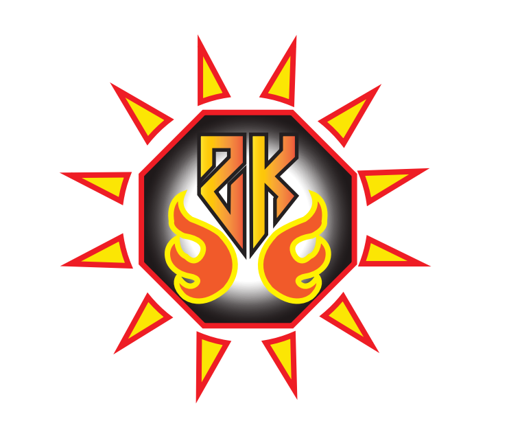

The design features a unique logo, bold typography,
and a clean layout with a soft blue background and white diagonal stripe.
Contact information, including an email address and phone number,
is prominently displayed for quick and easy communication.
The vibrant flames around the logo add a creative flair,
reflecting both professionalism and dynamism.
Perfect for making a strong first impression!
Project 2: Logo Design

This vibrant travel poster encourages exploration with the slogan
"Let's Go To Travel." Featuring iconic landmarks like Big Ben,
the Taj Mahal, and the Sydney Opera House,
it sparks wanderlust and curiosity about the world.
Project 3: Travel Poster
The iconic landmarks, including the Big Ben in London,
Sydney Opera House, Taj Mahal in India, and a traditional Torii Gate in Japan,
inspire wanderlust and cultural exploration. The airplane soaring above symbolizes adventure and the thrill of global travel,
while the colorful "Travelly" logo hints at an eco-friendly and energetic travel experience.
Perfect for sparking excitement and curiosity about your next journey!
With a vibrant Home Page providing an engaging introduction,
it allows users to navigate easily through features like Diploma Details
and a seamless Registration Process. The clean design, bold typography,
and organized content ensure an intuitive experience,
making it a valuable resource for students seeking essential course information and enrollment options.
Perfectly crafted for modern learners!
The menu features a variety of delicious pizzas,
each presented with a high-quality image, pricing,
and easy-to-access ingredient details.
Users can conveniently place orders directly from the site.
The clean layout, elegant typography,
and appetizing visuals make it an inviting platform for pizza enthusiasts.
Perfect for both casual diners and pizza connoisseurs looking for a delightful dining experience!
Its clean and colorful interface allows users to effortlessly add,
organize, and manage their travel items.
Featuring sorting options by input order, quantity,
or alphabetical order, the app ensures a hassle-free packing experience.
With real-time stats on total items, packed items, and packing progress,
it keeps travelers organized and stress-free.
Perfect for adventurers who love to stay on top of their travel essentials!